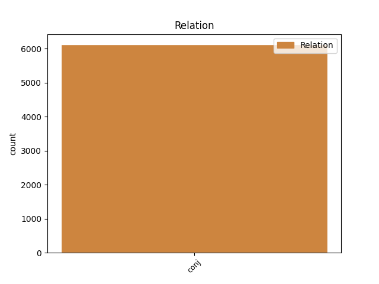
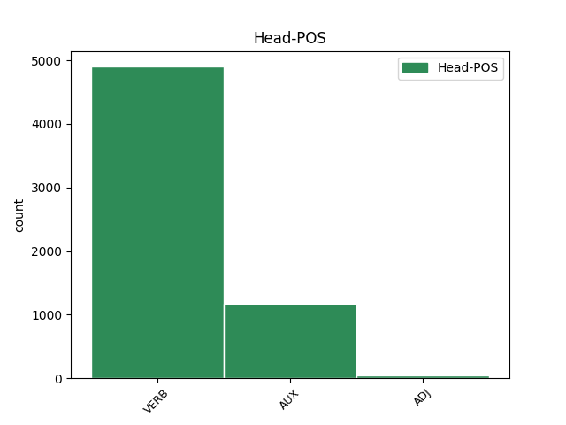
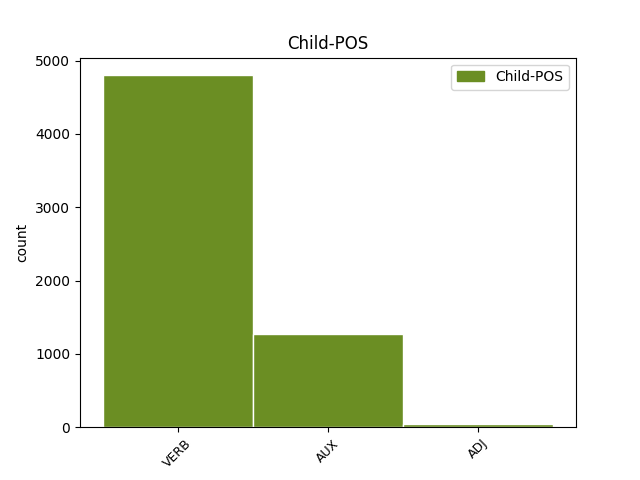

Distribution of features within this leaf



Agreement Rules sorted by frequency.
- When the dependent token is the conjunct(conj) of the head token, and the head token is VERB and the dependent token is VERB.
1 Naproti _ _ _ _ 0 _ _ _
2 tomu _ _ _ _ 0 _ _ _
3 prvky _ _ _ _ 0 _ _ _
4 , _ _ _ _ 0 _ _ _
5 kterým _ _ _ _ 0 _ _ _
6 chybí chybět VERB VB-S---3P-AA--- Aspect=Imp|Mood=Ind|Number=Sing|Person=3|Polarity=Pos|Tense=Pres|VerbForm=Fin|Voice=Act 0 _ _ _
7 jeden _ _ _ _ 0 _ _ _
8 obvodový _ _ _ _ 0 _ _ _
9 elektron _ _ _ _ 0 _ _ _
10 do _ _ _ _ 0 _ _ _
11 úplného _ _ _ _ 0 _ _ _
12 obsazení _ _ _ _ 0 _ _ _
13 krajní _ _ _ _ 0 _ _ _
14 slupky _ _ _ _ 0 _ _ _
15 a _ _ _ _ 0 _ _ _
16 tvoří tvořit VERB VB-P---3P-AA--- Aspect=Imp|Mood=Ind|Number=Plur|Person=3|Polarity=Pos|Tense=Pres|VerbForm=Fin|Voice=Act 6 conj _ _
17 jednomocné _ _ _ _ 0 _ _ _
18 záporné _ _ _ _ 0 _ _ _
19 ionty _ _ _ _ 0 _ _ _
20 a _ _ _ _ 0 _ _ _
21 vznikající _ _ _ _ 0 _ _ _
22 připoutáním _ _ _ _ 0 _ _ _
23 dalšího _ _ _ _ 0 _ _ _
24 elektronu _ _ _ _ 0 _ _ _
25 . _ _ _ _ 0 _ _ _
1 Podle _ _ _ _ 0 _ _ _
2 Moseleyova _ _ _ _ 0 _ _ _
3 zákona _ _ _ _ 0 _ _ _
4 odmocnina _ _ _ _ 0 _ _ _
5 z _ _ _ _ 0 _ _ _
6 vlnočtu _ _ _ _ 0 _ _ _
7 se _ _ _ _ 0 _ _ _
8 při _ _ _ _ 0 _ _ _
9 postupu _ _ _ _ 0 _ _ _
10 od _ _ _ _ 0 _ _ _
11 jednoho _ _ _ _ 0 _ _ _
12 prvku _ _ _ _ 0 _ _ _
13 k _ _ _ _ 0 _ _ _
14 následujícímu _ _ _ _ 0 _ _ _
15 vždycky _ _ _ _ 0 _ _ _
16 zvýší zvýšit VERB VB-S---3P-AA--- Aspect=Perf|Mood=Ind|Number=Sing|Person=3|Polarity=Pos|Tense=Pres|VerbForm=Fin|Voice=Act 0 _ _ _
17 o _ _ _ _ 0 _ _ _
18 stejnou _ _ _ _ 0 _ _ _
19 hodnotu _ _ _ _ 0 _ _ _
20 , _ _ _ _ 0 _ _ _
21 neboť _ _ _ _ 0 _ _ _
22 kde _ _ _ _ 0 _ _ _
23 je být AUX VB-S---3P-AA--- Mood=Ind|Number=Sing|Person=3|Polarity=Pos|Tense=Pres|VerbForm=Fin|Voice=Act 16 conj _ _
24 atomové _ _ _ _ 0 _ _ _
25 číslo _ _ _ _ 0 _ _ _
26 prvku _ _ _ _ 0 _ _ _
27 konstanty _ _ _ _ 0 _ _ _
28 * _ _ _ _ 0 _ _ _
29 . _ _ _ _ 0 _ _ _
1 Čáry _ _ _ _ 0 _ _ _
2 jsou být AUX VB-P---3P-AA--- Mood=Ind|Number=Plur|Person=3|Polarity=Pos|Tense=Pres|VerbForm=Fin|Voice=Act 0 _ _ _
3 měkčí _ _ _ _ 0 _ _ _
4 než _ _ _ _ 0 _ _ _
5 * _ _ _ _ 0 _ _ _
6 , _ _ _ _ 0 _ _ _
7 neboť _ _ _ _ 0 _ _ _
8 vznikají vznikat VERB VB-P---3P-AA--- Aspect=Imp|Mood=Ind|Number=Plur|Person=3|Polarity=Pos|Tense=Pres|VerbForm=Fin|Voice=Act 2 conj _ _
9 přeskoky _ _ _ _ 0 _ _ _
10 elektronů _ _ _ _ 0 _ _ _
11 do _ _ _ _ 0 _ _ _
12 sféry _ _ _ _ 0 _ _ _
13 dvojkvantové _ _ _ _ 0 _ _ _
14 . _ _ _ _ 0 _ _ _
1 Spektrum _ _ _ _ 0 _ _ _
2 nárazové _ _ _ _ 0 _ _ _
3 je být AUX VB-S---3P-AA--- Mood=Ind|Number=Sing|Person=3|Polarity=Pos|Tense=Pres|VerbForm=Fin|Voice=Act 0 _ _ _
4 tedy _ _ _ _ 0 _ _ _
5 prakticky _ _ _ _ 0 _ _ _
6 spojité _ _ _ _ 0 _ _ _
7 , _ _ _ _ 0 _ _ _
8 avšak _ _ _ _ 0 _ _ _
9 druhý _ _ _ _ 0 _ _ _
10 typ _ _ _ _ 0 _ _ _
11 rentgenového _ _ _ _ 0 _ _ _
12 záření _ _ _ _ 0 _ _ _
13 je být AUX VB-S---3P-AA--- Mood=Ind|Number=Sing|Person=3|Polarity=Pos|Tense=Pres|VerbForm=Fin|Voice=Act 3 conj _ _
14 charakteristický _ _ _ _ 0 _ _ _
15 , _ _ _ _ 0 _ _ _
16 neboť _ _ _ _ 0 _ _ _
17 má _ _ _ _ 0 _ _ _
18 spektrum _ _ _ _ 0 _ _ _
19 čárové _ _ _ _ 0 _ _ _
20 podobně _ _ _ _ 0 _ _ _
21 jako _ _ _ _ 0 _ _ _
22 optická _ _ _ _ 0 _ _ _
23 spektra _ _ _ _ 0 _ _ _
24 vysílaná _ _ _ _ 0 _ _ _
25 atomy _ _ _ _ 0 _ _ _
26 žhavých _ _ _ _ 0 _ _ _
27 plynů _ _ _ _ 0 _ _ _
28 . _ _ _ _ 0 _ _ _
1 Slunečním _ _ _ _ 0 _ _ _
2 větrem _ _ _ _ 0 _ _ _
3 rozumíme _ _ _ _ 0 _ _ _
4 tok _ _ _ _ 0 _ _ _
5 elektricky _ _ _ _ 0 _ _ _
6 nabitých _ _ _ _ 0 _ _ _
7 částic _ _ _ _ 0 _ _ _
8 , _ _ _ _ 0 _ _ _
9 zejména _ _ _ _ 0 _ _ _
10 elektronů _ _ _ _ 0 _ _ _
11 a _ _ _ _ 0 _ _ _
12 protonů _ _ _ _ 0 _ _ _
13 pocházejících pocházející ADJ AGFP2-----A---- Aspect=Imp|Case=Gen|Gender=Fem|Number=Plur|Polarity=Pos|Tense=Pres|VerbForm=Part|Voice=Act 0 _ _ _
14 ze _ _ _ _ 0 _ _ _
15 slunce _ _ _ _ 0 _ _ _
16 , _ _ _ _ 0 _ _ _
17 a _ _ _ _ 0 _ _ _
18 šířících šířící ADJ AGFP2-----A---- Aspect=Imp|Case=Gen|Gender=Fem|Number=Plur|Polarity=Pos|Tense=Pres|VerbForm=Part|Voice=Act 13 conj _ LDeriv=šířit|LGloss=(rozšiřovat;_přech.)
19 se _ _ _ _ 0 _ _ _
20 do _ _ _ _ 0 _ _ _
21 meziplanetárního _ _ _ _ 0 _ _ _
22 prostoru _ _ _ _ 0 _ _ _
23 . _ _ _ _ 0 _ _ _
1 Naproti _ _ _ _ 0 _ _ _
2 tomu _ _ _ _ 0 _ _ _
3 prvky _ _ _ _ 0 _ _ _
4 , _ _ _ _ 0 _ _ _
5 kterým _ _ _ _ 0 _ _ _
6 chybí _ _ _ _ 0 _ _ _
7 jeden _ _ _ _ 0 _ _ _
8 obvodový _ _ _ _ 0 _ _ _
9 elektron _ _ _ _ 0 _ _ _
10 do _ _ _ _ 0 _ _ _
11 úplného _ _ _ _ 0 _ _ _
12 obsazení _ _ _ _ 0 _ _ _
13 krajní _ _ _ _ 0 _ _ _
14 slupky _ _ _ _ 0 _ _ _
15 a _ _ _ _ 0 _ _ _
16 tvoří tvořit VERB VB-P---3P-AA--- Aspect=Imp|Mood=Ind|Number=Plur|Person=3|Polarity=Pos|Tense=Pres|VerbForm=Fin|Voice=Act 0 _ _ _
17 jednomocné _ _ _ _ 0 _ _ _
18 záporné _ _ _ _ 0 _ _ _
19 ionty _ _ _ _ 0 _ _ _
20 a _ _ _ _ 0 _ _ _
21 vznikající vznikající ADJ AGIP4-----A---- Animacy=Inan|Aspect=Imp|Case=Acc|Gender=Masc|Number=Plur|Polarity=Pos|Tense=Pres|VerbForm=Part|Voice=Act 16 conj _ LDeriv=vznikat
22 připoutáním _ _ _ _ 0 _ _ _
23 dalšího _ _ _ _ 0 _ _ _
24 elektronu _ _ _ _ 0 _ _ _
25 . _ _ _ _ 0 _ _ _
Disagree Examples:
1 Zde _ _ _ _ 0 _ _ _
2 se _ _ _ _ 0 _ _ _
3 konkretizují konkretizovat VERB VB-P---3P-AA--- Mood=Ind|Number=Plur|Person=3|Polarity=Pos|Tense=Pres|VerbForm=Fin|Voice=Act 0 _ _ _
4 zvláštní _ _ _ _ 0 _ _ _
5 okolnosti _ _ _ _ 0 _ _ _
6 , _ _ _ _ 0 _ _ _
7 za _ _ _ _ 0 _ _ _
8 nichž _ _ _ _ 0 _ _ _
9 lze _ _ _ _ 0 _ _ _
10 vjet _ _ _ _ 0 _ _ _
11 v _ _ _ _ 0 _ _ _
12 podélném _ _ _ _ 0 _ _ _
13 směru _ _ _ _ 0 _ _ _
14 na _ _ _ _ 0 _ _ _
15 tramvajový _ _ _ _ 0 _ _ _
16 pás _ _ _ _ 0 _ _ _
17 , _ _ _ _ 0 _ _ _
18 dříve _ _ _ _ 0 _ _ _
19 na _ _ _ _ 0 _ _ _
20 tramvajové _ _ _ _ 0 _ _ _
21 koleje _ _ _ _ 0 _ _ _
22 , _ _ _ _ 0 _ _ _
23 neboť _ _ _ _ 0 _ _ _
24 dosavadní _ _ _ _ 0 _ _ _
25 formulace _ _ _ _ 0 _ _ _
26 " _ _ _ _ 0 _ _ _
27 jen _ _ _ _ 0 _ _ _
28 je _ _ _ _ 0 _ _ _
29 - _ _ _ _ 0 _ _ _
30 li _ _ _ _ 0 _ _ _
31 to _ _ _ _ 0 _ _ _
32 nutné _ _ _ _ 0 _ _ _
33 " _ _ _ _ 0 _ _ _
34 byla být AUX VpQW---XR-AA--- Gender=Fem,Neut|Number=Plur,Sing|Polarity=Pos|Tense=Past|VerbForm=Part|Voice=Act 3 conj _ _
35 příliš _ _ _ _ 0 _ _ _
36 obecná _ _ _ _ 0 _ _ _
37 . _ _ _ _ 0 _ _ _
1 Způsobí _ _ _ _ 0 _ _ _
2 - _ _ _ _ 0 _ _ _
3 li _ _ _ _ 0 _ _ _
4 mimořádné _ _ _ _ 0 _ _ _
5 znečištění _ _ _ _ 0 _ _ _
6 společných _ _ _ _ 0 _ _ _
7 prostorů _ _ _ _ 0 _ _ _
8 nebo _ _ _ _ 0 _ _ _
9 chodníku _ _ _ _ 0 _ _ _
10 uživatel _ _ _ _ 0 _ _ _
11 bytu _ _ _ _ 0 _ _ _
12 nebo _ _ _ _ 0 _ _ _
13 jiná _ _ _ _ 0 _ _ _
14 zjištěná _ _ _ _ 0 _ _ _
15 osoba _ _ _ _ 0 _ _ _
16 , _ _ _ _ 0 _ _ _
17 jsou být AUX VB-P---3P-AA--- Mood=Ind|Number=Plur|Person=3|Polarity=Pos|Tense=Pres|VerbForm=Fin|Voice=Act 0 _ _ _
18 povinni _ _ _ _ 0 _ _ _
19 znečištění _ _ _ _ 0 _ _ _
20 neprodleně _ _ _ _ 0 _ _ _
21 odstranit _ _ _ _ 0 _ _ _
22 , _ _ _ _ 0 _ _ _
23 jinak _ _ _ _ 0 _ _ _
24 bude být AUX VB-S---3F-AA--- Mood=Ind|Number=Sing|Person=3|Polarity=Pos|Tense=Fut|VerbForm=Fin|Voice=Act 17 conj _ _
25 odstraněno _ _ _ _ 0 _ _ _
26 na _ _ _ _ 0 _ _ _
27 jejich _ _ _ _ 0 _ _ _
28 náklad _ _ _ _ 0 _ _ _
29 . _ _ _ _ 0 _ _ _
1 Pracující _ _ _ _ 0 _ _ _
2 poživatel _ _ _ _ 0 _ _ _
3 starobního _ _ _ _ 0 _ _ _
4 důchodu _ _ _ _ 0 _ _ _
5 nastoupil nastoupit VERB VpYS---XR-AA--- Aspect=Perf|Gender=Masc|Number=Sing|Polarity=Pos|Tense=Past|VerbForm=Part|Voice=Act 0 _ _ _
6 do _ _ _ _ 0 _ _ _
7 zaměstnání _ _ _ _ 0 _ _ _
8 # _ _ _ _ 0 _ _ _
9 srpna _ _ _ _ 0 _ _ _
10 # _ _ _ _ 0 _ _ _
11 a _ _ _ _ 0 _ _ _
12 bude být AUX VB-S---3F-AA--- Mood=Ind|Number=Sing|Person=3|Polarity=Pos|Tense=Fut|VerbForm=Fin|Voice=Act 5 conj _ _
13 pracovat _ _ _ _ 0 _ _ _
14 do _ _ _ _ 0 _ _ _
15 # _ _ _ _ 0 _ _ _
16 dubna _ _ _ _ 0 _ _ _
17 # _ _ _ _ 0 _ _ _
18 . _ _ _ _ 0 _ _ _
1 Důchodce _ _ _ _ 0 _ _ _
2 nastoupí nastoupit VERB VB-S---3P-AA--- Aspect=Perf|Mood=Ind|Number=Sing|Person=3|Polarity=Pos|Tense=Pres|VerbForm=Fin|Voice=Act 0 _ _ _
3 do _ _ _ _ 0 _ _ _
4 zaměstnání _ _ _ _ 0 _ _ _
5 # _ _ _ _ 0 _ _ _
6 ledna _ _ _ _ 0 _ _ _
7 a _ _ _ _ 0 _ _ _
8 bude být AUX VB-S---3F-AA--- Mood=Ind|Number=Sing|Person=3|Polarity=Pos|Tense=Fut|VerbForm=Fin|Voice=Act 2 conj _ _
9 pracovat _ _ _ _ 0 _ _ _
10 do _ _ _ _ 0 _ _ _
11 # _ _ _ _ 0 _ _ _
12 září _ _ _ _ 0 _ _ _
13 . _ _ _ _ 0 _ _ _
1 Poměrnou _ _ _ _ 0 _ _ _
2 část _ _ _ _ 0 _ _ _
3 podílů _ _ _ _ 0 _ _ _
4 nelze _ _ _ _ 0 _ _ _
5 poskytnout _ _ _ _ 0 _ _ _
6 těm _ _ _ _ 0 _ _ _
7 pracovníkům _ _ _ _ 0 _ _ _
8 , _ _ _ _ 0 _ _ _
9 kteří _ _ _ _ 0 _ _ _
10 rozvázali _ _ _ _ 0 _ _ _
11 pracovní _ _ _ _ 0 _ _ _
12 poměr _ _ _ _ 0 _ _ _
13 z _ _ _ _ 0 _ _ _
14 jiných _ _ _ _ 0 _ _ _
15 důvodů _ _ _ _ 0 _ _ _
16 , _ _ _ _ 0 _ _ _
17 a _ _ _ _ 0 _ _ _
18 pracovníkům _ _ _ _ 0 _ _ _
19 , _ _ _ _ 0 _ _ _
20 kteří _ _ _ _ 0 _ _ _
21 nastupují _ _ _ _ 0 _ _ _
22 do _ _ _ _ 0 _ _ _
23 prvního _ _ _ _ 0 _ _ _
24 pracovního _ _ _ _ 0 _ _ _
25 poměru _ _ _ _ 0 _ _ _
26 po _ _ _ _ 0 _ _ _
27 přerušení _ _ _ _ 0 _ _ _
28 pracovního _ _ _ _ 0 _ _ _
29 poměru _ _ _ _ 0 _ _ _
30 , _ _ _ _ 0 _ _ _
31 studenti _ _ _ _ 0 _ _ _
32 vstupující _ _ _ _ 0 _ _ _
33 po _ _ _ _ 0 _ _ _
34 skončení _ _ _ _ 0 _ _ _
35 školy _ _ _ _ 0 _ _ _
36 prvně _ _ _ _ 0 _ _ _
37 do _ _ _ _ 0 _ _ _
38 zaměstnání _ _ _ _ 0 _ _ _
39 , _ _ _ _ 0 _ _ _
40 ženy _ _ _ _ 0 _ _ _
41 , _ _ _ _ 0 _ _ _
42 které _ _ _ _ 0 _ _ _
43 skončily skončit VERB VpTP---XR-AA--- Animacy=Inan|Aspect=Perf|Gender=Fem,Masc|Number=Plur|Polarity=Pos|Tense=Past|VerbForm=Part|Voice=Act 0 _ _ _
44 po _ _ _ _ 0 _ _ _
45 mateřské _ _ _ _ 0 _ _ _
46 dovolené _ _ _ _ 0 _ _ _
47 pracovní _ _ _ _ 0 _ _ _
48 poměr _ _ _ _ 0 _ _ _
49 a _ _ _ _ 0 _ _ _
50 nastupují nastupovat VERB VB-P---3P-AA--- Aspect=Imp|Mood=Ind|Number=Plur|Person=3|Polarity=Pos|Tense=Pres|VerbForm=Fin|Voice=Act 43 conj _ _
51 znovu _ _ _ _ 0 _ _ _
52 do _ _ _ _ 0 _ _ _
53 zaměstnání _ _ _ _ 0 _ _ _
54 . _ _ _ _ 0 _ _ _